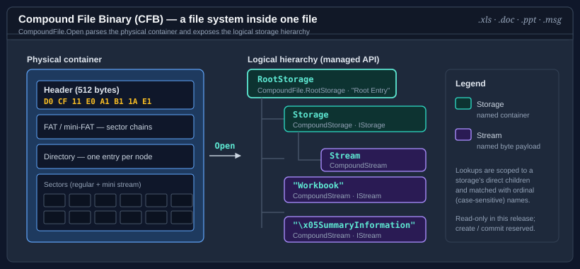

Bodu.IO.Compound

Bodu.IO.Compound is a reader and writer for the OLE2 / Compound File Binary (CFB) container format — the structured-storage envelope used by legacy Microsoft Office documents (.xls, .doc, .ppt, .msg) and other technologies. Part of the Binary Formats & I/O topic, it opens existing containers — exposing the embedded storage hierarchy and the raw byte payload of each named stream — and authors new ones through CompoundFile.Create and the Bodu.IO.Compound.Builders API, with no application-format knowledge of its own.
A compound file is effectively a small file system embedded in a single file. CompoundFile is the managed counterpart of the COM StgOpenStorage entry point: navigation begins at the root storage and descends through nested storages to stream leaves.

| Concept | Type | COM analogue | Role |
|---|---|---|---|
| File | CompoundFile | StgOpenStorage |
Opens the container and anchors the hierarchy at RootStorage. |
| Storage | CompoundStorage | IStorage |
A named container of child storages and streams. |
| Stream | CompoundStream | IStream |
A named, file-like leaf with an opaque byte payload; itself a seekable Stream cursor over those bytes — read-only from a read-opened file, read-write on a writable file. |
Key concepts
| Concept | Plain-language meaning |
|---|---|
| Compound file | A single physical file beginning with the OLE2 signature D0 CF 11 E0 that holds a header, allocation tables, a directory, and sectors. |
| Storage / stream | The directory tree: storages are folders, streams are files. Names are matched case-insensitively by the compound-file relationship, scoped to a storage's direct children. |
| Sector chain | A stream's bytes are stored as a linked chain of fixed-size sectors indexed by the FAT (or, for streams under the mini-stream cutoff, the mini-FAT); the reader follows the chain to assemble or stream the payload. |
| Buffered vs streaming | The whole file is read into memory at open time by default, or sectors are read on demand from a seekable source for large files; a third Auto strategy picks per source size. |
| Property set | An OLE metadata stream (\x05SummaryInformation, \x05DocumentSummaryInformation) mapping integer property IDs to typed values. |
For the full glossary, see Core concepts.
Scope and limitations
- Reading and writing. This introduction focuses on the read path; the library also authors CFB containers —
CompoundFile.CreateplusCommit, the detachedCompoundStorageBuilder, and the property-set builders. See the Authoring compound files guide. - No format interpretation. The reader surfaces named streams and their bytes; understanding a
WorkbookorWordDocumentstream is the caller's job. The narrow BIFF8.xlsreader in Bodu.Formats.Excel.Binary is the worked example of a format reader layered on top.
Worked example — open, navigate, read
A single flow traces the container end-to-end:
- Probe the input cheaply with
CompoundFile.IsCompoundFile(stream). - Open the container:
using CompoundFile file = CompoundFile.Open(stream). - Walk the hierarchy from RootStorage with
EnumerateEntries/EnumerateStorages/EnumerateStreams. - Resolve a named stream:
file.RootStorage.OpenStream("Workbook")(or the non-throwingTryOpenStream). - Read the bytes:
ReadAllBytes()for a small payload, orOpen()for a seekableCompoundStreamcursor.
using Bodu.IO.Compound;
using CompoundFile file = CompoundFile.Open(File.OpenRead("book.xls"));
foreach (CompoundEntryInfo info in file.RootStorage.EnumerateEntries())
Console.WriteLine($"{info.EntryType}: {info.Name} ({info.Length} bytes)");
CompoundStream workbook = file.RootStorage.OpenStream("Workbook");
byte[] bytes = workbook.ReadAllBytes();
Common scenarios
| Scenario | Reach for |
|---|---|
| Test whether a file is a compound file | CompoundFile.IsCompoundFile(stream) |
| Open a small file fully in memory | CompoundFile.Open(stream) |
| Bound memory for a large file | CompoundFile.Open(stream, buffered: false) |
| Tune the read strategy or validation level | CompoundFile.Open(stream, options) with a CompoundFileOptions |
| Classify why a file was rejected | catch (CompoundFileFormatException ex) → ex.Category |
| List a storage's children | EnumerateEntries / EnumerateStorages / EnumerateStreams |
| Read a required stream's bytes | OpenStream(name).ReadAllBytes() |
| Read a stream incrementally | OpenStream(name) → a seekable CompoundStream cursor |
| Look up a stream that may be absent | TryOpenStream(name, out stream) |
| Read authored document metadata | file.TryGetSummaryInformation(out summary) |
| Write document metadata | file.SetSummaryInformation(summary) (or RootStorage.WritePropertySet(name, set)) on a writable file |
| Stamp storage entry metadata | set RootStorage.ClassId / CreationTime / ModifiedTime / StateBits on a writable file |
| Author a container | CompoundStorageBuilder.CreateRoot() → AddStream → Save (or CompoundFile.Create + Commit) |
| Commit a writable file asynchronously | await file.CommitAsync() |
Headline types — Bodu.IO.Compound
| Type | Purpose |
|---|---|
| CompoundFile | Opens or creates a CFB container and anchors the hierarchy; static Open / OpenRead / IsCompoundFile readers and the Create writer (finalized by Commit / CommitAsync), plus the SetSummaryInformation / SetDocumentSummaryInformation property-set writers. |
| CompoundStorage | A storage node — enumerates children, resolves child storages and streams by name, and (on a writable file) creates, deletes, renames, writes property sets, and carries settable entry metadata. |
| CompoundStream | A stream node and seekable Stream cursor in one — ReadAllBytes for the whole payload, AsMemory for a whole-payload view, Stat for metadata, an async-capable ReadAsync, and Write / SetLength on a writable cursor. |
| CompoundEntryInfo | An immutable metadata snapshot — name, CompoundEntryType, length, class id, timestamps, and red-black CompoundEntryColor. |
| CompoundFileOptions | Read options — CompoundReadStrategy (buffered / streaming / auto) and CompoundValidationLevel (strict / compatible / minimal). |
| CompoundFileException | The common base for every compound-file failure; CompoundFileFormatException (with a CompoundFileError Category) and CompoundStreamNotFoundException derive from it. |
Property sets — Bodu.IO.Compound.PropertySets
| Type | Purpose |
|---|---|
| SummaryInformation | Typed view over the \x05SummaryInformation stream — title, author, timestamps, counts. |
| DocumentSummaryInformation | Typed view over the \x05DocumentSummaryInformation stream. |
| OlePropertySet | The underlying code-paged, sectioned property map for non-standard properties. |
Where to go next
- Core concepts — full vocabulary: container, storage, stream, sector chain, mini-stream, directory, property set.
- Getting started — install + minimal samples for opening, navigating, and reading.
- Bodu.IO.Compound guides — reading files, buffered vs streaming access, and property sets.
- API reference — Bodu.IO.Compound · Bodu.IO.Compound.PropertySets.
- Binary Formats & I/O topic overview — where the container reader sits beneath the format readers.
- For the BIFF8
.xlsreader built on this package, see Bodu.Formats.Excel.Binary.